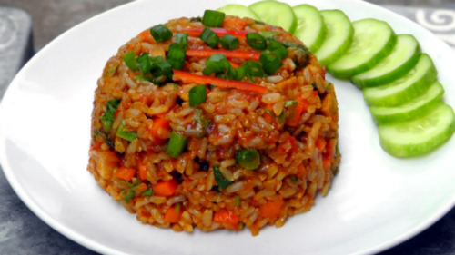

Indonesische Nasi Goreng
Ingredienten voor 4 personen | Minimaal 30 minuten | Makkelijk
Nasi Goreng is Indonesian fried rice. This dish can be enjoyed by itself or as the basis of a larger meal, for example with a rijsttafel. It is very easy to make and won't take more than 30 minutes to prepare.
Benodigde Ingredienten
- rijst 400 g
- kip (of ham, in blokjes) 300 g
- garnalen 100 g
- wortelen (in stukken) 100 g
- prei (in stukken) 100 g
- sojascheuten 100 g
- selder (blaadjes, gehakt) 1 el
- uien (fijngesneden) 200 g
- eieren 2
- ketjap 2 el
- sambal 2 el
- arachideolie
- knoflook (fijngesneden) 2 teentjes
- verse bieslook (fijngehakt) 1 el
- zout

Bereidingswijze van het gerecht
- Snij de uien en knoflook fijn. Snij het vlees in blokjes. Hak de bieslook en selderblaadjes fijn.
- Kook de rijst en laat uitlekken en afkoelen. Nog beter is een restje rijst van de vorige dag.
- Verhit wat olie in een wok en roerbak daarin de uien en de knoflook, tot de uien geel kleuren.
- Voeg het vlees toe en bak even mee. Doe er de groenten bij en roerbak ze. De groenten moeten wel knapperig blijven.
- Doe er beetje bij beetje de rijst bij en meng goed, tot de rijst en de groenten gelijkmatig verdeeld zijn.
- Roer de sambal en de ketjap door de nasi, en als laatste de garnalen. Breng op smaak met zout.
- Kluts de eieren, breng ze op smaak met zout en bak er een dunne omelet van. Rol op en snij in reepjes.
- Garneer de nasi goreng met reepjes omelet, en bestrooi met de fijngehakte bieslook en selder. Serveer met kroepoek.